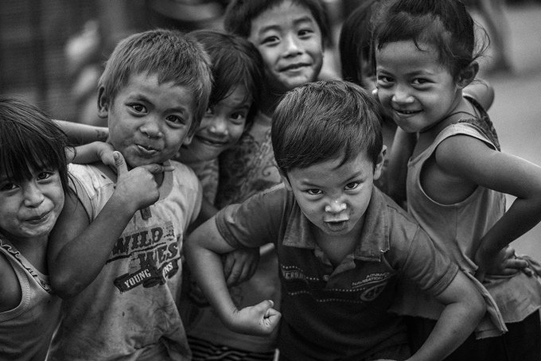

POVERTY
The Philippines has a fairly high poverty rate with more than 16% of the population living below the poverty line. Because of the many people reliant on agriculture for an income and inequality in wealth distribution, about 17.6 million Filipinos struggle to afford basic necessities. Economic growth has gone through boom and bust cycles, and recent episodes of moderate economic expansion have had limited impact on the poor. Great inequality across income brackets, regions, and sectors, as well as unmanaged population growth, are considered some of the key factors constraining poverty reduction efforts.
